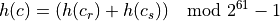
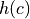
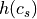
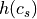
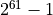
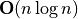
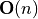
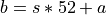
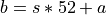

Card, Deck and Shoe Classes¶
This chapter introduces a number of simple classes for modeling card games. In Card, Deck and Shoe Analysis we’ll look at a number of issues related to cards. This includes points, ordering, suits, and identity. We’ll also look at Card Subclass Factory, Unicode Images, Deck, and Shoe.
We’ll follow this with Card-Deck-Shoe Questions and Answers to address any lingering doubts or minor issues.
In Card Superclass we’ll present the overall design for Card.
This is followed by face cards in FaceCard Class, and the special
cases for aces in AceCard Class.
We’ll look at the need for a factory function in Card Factory Function.
We’ll also design containers for cards including Deck class and Shoe class.
We’ll enumerate the deliverables in Card-Deck-Shoe Deliverables.
This chapter will review the structure of the unit tests in Testing Examples.
Card, Deck and Shoe Analysis¶
The standard playing card has two attributes: a rank (Ace, 2 through 10, Jack, Queen, or King) and a suit (♣, ♢, ♡, or ♠). The set of all 52 combinations comprises a full deck.
The basic set of responsibilities of the Card
class include keeping the rank and suit of a single
standard playing card.
It turns out, however, that these objects are fairly complex.
We’ll look at several topics:
Points. A card has a point value, which is a number from 1 to 11, and is based on the rank. In the case of an Ace, it is also based on the hand in which the card is evaluated. This collaboration with a hand complicates the responsibilities for a single card.
Ordering. An Ace has a complex life. What order do we put the cards in?
Suits. Suit doesn’t matter, right? What about the name of the game, “black jack”?
Identity. How do we compare cards?
Card Subclass Factory. How do we create card objects that are in their correct subclass?
Unicode Images. Since Unicode offers us images of cards, we can use these.
Deck. Cards come in a standard deck of 52 cards.
Shoe. Blackjack dealers often use a shoe with up to eight decks.
We’ll start by looking at points.
Points¶
We have three different rules for establishing the point value of a card. This is a big hint that we have three subclasses.
One subclass includes the Aces, which are either 1 or 11 points.
Another subclass includes the number cards from 2 to 10, where the rank is the point value.
Finally, the third subclass includes the face cards, where the point value is fixed at 10.
These three subclasses implement slightly different versions of a method to return the point value of the card. For more discussion on this, see Card-Deck-Shoe Questions and Answers FAQ for more discussion.
The problem of determining the value of aces is something we will have
to defer until after we create the Hand class. First, we’ll implement
the basic Card class, then we’ll develop the Hand class, and decide how the Hand class
computes its number of points from the Card instances.
The terminology used gives us some hint as to how to structure our design. Players refer to a soft total and a hard total. An A-6 hand is called a soft 17, and a hard 7. A soft hand has some flexibility in how it is played. If you hit a soft 17, and get a face card (for example, a Jack), you now have an A-J-6, totalling hard 17.
For now, we’ll consider two methods: softValue() and hardValue() to
return the various values of each card. For ordinary cards, the values are both the rank.
For face cards, the values are both 10. For aces, however, the hard value is 1 and
the soft value is 11.
While this design does have some potential problems in dealing with multiple aces in a single hand, we’ll let it stand until we have more design in place.
Ordering¶
Another exasperating detail of standard playing cards is the ordering of the various ranks.
In many games the ordering of cards is 2-10, J, Q, K, A. The Ace (rank of 1) is placed after the King.
In Blackjack, Ace is both 1 and 11, leading to a variable ranking, depending on other cards in the hand.
For games like Poker and Bridge, we need to distinguish the ordering and the rank because the ordering of the cards doesn’t depend on the simplistic rank value.
In Blackjack, this doesn’t matter, and we can ignore it.
Suits¶
The issue of suit requires some care. In the game of Blackjack, suits don’t matter. Indeed, for the purposes of simulation, we could discard the notion of suit entirely. However, for the purposes of making a reasonably complete model of real-world objects, it makes sense to implement the suit of a card, even if we do nothing with it.
Also, suits have two colors: red and black. Even though the name of the game includes a color and rank (“black”, “jack”) these are both irrelevant to the modern game. Historically, an ace of spades and either of the black jacks had a special payout. Since this is no longer the case, color and suit no longer matter.
We’d like to provide symbolic variable names for the suits. In Python we have a number of choices.
We can create an
enum.Enumclass for the suits.We can use class-level variables to define four named constants.
We would also like to provide named constants for the face cards: Jack, Queen, and King,
as well as the Ace. This does not appear to be a perfectly sensible use of the enum.Enum class
definitions, since these labels are co-mingled with integer ranks.
For this reason, we’ll suggest class-level variables for all of these symbolic
constants. We can then say Card.Spades to reference the
unicode character u'\N{BLACK SPADE SUIT}'.
There’s a compelling case to be made for defining an enum.Enum
for the suits. While the examples will assume class level variables,
the student may want to pursue the enum solution.
Identity¶
Cards need to be compared. We need a rich set of comparisons for cards.
All of these are build automatically by typing.NamedTuple` and the @dataclass decorator.
Hash Value. We must implement a proper hash function,
__hash__()that includes both rank and suit.The definition for
__hash__()in section 3.3.1 of the Language Reference Manual tells us to do the calculation using a modulus value. The modulus is based onsys.hash_info.width, which is the number of bits. The actual value we want to use issys.hash_info.modulus.
The hash for a card, , is equal to the sum of the hash for the card’s rank,
 plus the hash for the card’s suit .
The sum is taken modulus
plus the hash for the card’s suit .
The sum is taken modulus sys.hash_info.modulus. The value shown,  is typical, but not the only value used. This is based onsys.hash_info.width.Equality. We must implement
__eq__()and__ne__()so that we can compare cards to each other. This is a subtle issue because – in Blackjack – suits don’t matter. A 10 of Clubs is essentially equal to a 10 of Spades.Rank. We might want to implement
__gt__(),__lt__(),__ge__(),__le__()so that cards can be properly ordered.
These features are best provided through a @dataclass(frozen=True, order=True) decorator.
Card Subclass Factory¶
We need to be able to create a Card instance without being deeply concerned about
which specific subclass it belongs to. This is where a Factory
or Builder design pattern is essential.
Ideally, we’ll have a card_factory() function that emits
an object of the appropriate subclass of the Card class.
We can then do things like this:
Creating Cards
for suit in Card.Spades, Card:Hearts, Card.Diamonds, Card.Clubs:
for rank in range(1,14):
c = card_factory(rank, card)
This kind of nested loop will properly create all 52 distinct cards.
We have an interesting implementation question around this factory. There are two common ways to implement this in Python:
Stand-Alone Function.
Static Method of the Card class.
The stand-alone function is widely used because it’s simple.
A card instance is created with card_factory(Card.Ace, Card.Spades).
The static method of the Card class involves pushing the function
into the definition of the class.
class Card:
@staticmethod
def card_factory(rank: int, suit: str) -> 'Card':
...
A card instance is created with Card.card_factory(Card.Ace, Card.Spades).
Some developers like the static method because it’s bound into the Card
class hierarchy. It doesn’t offer any other advantages. It can promote
readability.
Unicode Images¶
The Unicode character set has individual card images available as characters. There are a number of images available for each suit.
The mapping works like this:
- spades
0x1F0A0to0x1F0AE- hearts
0x1F0B0to0x1F0BE- diamonds
0x1F0C0to0x1F0CE- clubs
0x1F0D0to0x1F0DE
The Ace of Spades numeric value is 0x1F0A0. In Python, the string Unicode escape needs leading zeroes to make
it a full eight hexadecimal digits. It looks like this: `"\u0001f0a0".
The built-in chr() function doesn’t need all the leading digits.
>>> "\U0001f0a0"
'🂠'
>>> chr(0x1f0a0)
'🂠'
There’s an interesting wrinkle in this mapping. Unicode includes a fourteenth “knight” rank. We need to skip this rank to map the thirteen conventional ranks and four suits to a Unicode character.
Ranks 1 to 11 (Ace to Jack) are simple additions to the base value for the suit.
5 Diamonds = 0x1F0C0 + 5 = 🃅
Ranks 12 and 13 (Queen and King) are after the knight and therefore off by one: we add 13 and 14 (0xD and 0xE)
Queen Spades = 0x1F0A0 + 13 = 🂭
The images are only legible if we use a fairly large font.
Deck¶
A deck of cards has responsibility for shuffling and dealing the various cards. Additionally, it should constuct the complete set of 52 cards. We note that shuffling uses a random number generator, but a deck isn’t the same kind of random event factory that a Wheel or pair of Dice is. In the case of Wheel and Dice, the random events were based on random selection with replacement: an individual event can be regenerated any number of times. In the case of a deck, however, once a card has been dealt, it will not show up until the deck is shuffled.
In Roulette and Craps, the payout odds depended on the RandomEvent class:
either the the Bin or Throw subclass. In Blackjack, the
ante’s win amount depends on the player’s entire hand. This means that
being dealt an individual card isn’t the same kind of thing that a throw
of the dice is. It suggests that the dealer’s shoe is the random
event factory, and the entire hand is a complex random event created by
dealing cards. Continuing this line of thought, an Outcome instance’s
win amount could depend on a RandomEvent instance, if we
consider the entire hand to be a single, complex random event.
Considering an entire hand to be a single random event is skating on
pretty thin ice, so we won’t force-fit the Deck class into the
random event factory of our framework. Instead, we will let the Deck class
stand alone. We’ll design a simple initialization for a deck that
constructs the 52 cards. Beyond that, the notions of shuffling and
dealing can be assigned to the shoe.
There’s a Wrap v. Extend question regarding the Deck class implementation.
We could consider it a wrapper around a Python collection
or we could extend an existing collection.
In this case, the initialization of a Deck instance is distict
from the way any of the built-in collections work. For that reason,
it seems best for this collection to wrap an existing collection.
Since the Deck class is a container, we have to examine the
available collection classes to determine which concrete class we need.
Interestingly, we only need two features of Collection:
the add() method and the __iter__() method. These
methods are implemented for all of the variations of Set
and List.
Shoe¶
The dealer’s shoe is where Card instances are shuffled and
dealt to create individual hands. A shoe will be built from some number of
Deck instances. More properly, the shoe will contain the Card instances
from those Deck instances. The Deck objects aren’t
really used for much more than constructing batches of individual Card
objects. The Shoe class responsibilities include proper
initialization using a given number of decks, periodic shuffling and
proper dealing.
In a casino, the shuffling involves a ritual of spreading the cards on the table and stirring them around thoroughly, then stacking them back into the shoe. The top-most card is extracted, shown to the players, discarded, and a marker card is cut into the shoe at least two decks from the end, leaving about 100 cards unplayable after the marker. While most of the ritual does not require careful modeling, the presence of undealt cards at the end of the shoe is important as a way to defeat card-counting strategies.
Since a Shoe instance is a container, we have to examine the
available collection classes to determine which concrete class we need.
Interestingly, we only need two features of list:
the extend() method to put another deck into the shoe and the
__iter__().
A simple shuffling algorithm iterates through all of the positions
in the Shoe collection, exchanging the Card instance in that position
with a Card instance in a randomly-selection position.
The random module has a function to shuffle, which may be a better
choice than creating yet another shuffling algorithm.
See Card-Deck-Shoe Questions and Answers for more discussion on shuffling.
Card-Deck-Shoe Questions and Answers¶
Why are there three subclasses of Card? Isn’t it simpler to have one class and use an if-statement to sort out the point values?
Primarily, there are three classes because they have different behaviors. Merging them into a single class and sorting out the behaviors with an if-statement is often a problem.
First, and most important, if-statements add complexity. The question “wouldn’t it be simpler to use an if-statement” is a kind of oxymoron.
Second, and almost as important, if-statements dilute responsibility assignments. Combining all three subclasses into one puts three slightly different responsibilities into one place, making it more difficult to debug problems. Further, we could wind up repeating or other reusing the if-statement in inappropriate ways. If we create separate subclasses, the clear separation of responsibility becomes a matter of definition, not a matter of following a complex thread of programming logic.
Third, if-statements limit growth, adaptation and change. If we have a modification to the rules, for example, making 1-eyed Jacks wild, we would prefer to simply introduce another subclass. We find that chasing down one or more related if-statements to assure ourselves that we are correctly handling the new subtlety rapidly gets out of hand.
What about getter methods for rank and suit of the Card class?
Below, we’ll excplicitly avoid writing getter methods for these attributes.
Generally, getters and setters are atypical Python programming. In the event of a design change, we can replace an attribute with a property to preserve the syntax but add features.
The notion of encapsulation does not require all attributes be wrapped with method functions. The use of getter and setter methods is an implementation choice used in Java to permit ready introspection of classes.
A narrow definition of responsibilities is all that’s required to have a properly encapsulated design. Collaborators can allowed to examine attributes. In Python, we know that attributes are part of the public interface of a class.
Is that the best shuffling algorithm? Won’t it move each card twice? Won’t it sometimes put a card back into the original spot?
Yes, it may move some cards twice and it may leave a card in position. This is part of random behavior. This algorithm touches every card, swapping it with a randomly selected card. We are assured that every card was put into a random position. Sometimes a card will have been moved more than once, but the minimum criteria is that every card has been moved.
While a shuffling algorithm that models the real world is tempting, this adds complexity for no actual improvement in the randomization. A popular technique in the real world is to cut the deck in half and then riffle the cards into a single pile. If done with the kind of perfection that software provides (cutting the deck exactly in half and exactly alternating the cards) this shuffle leads to a perfectly predictable cycle of orders. What makes this shuffle work in the real world is the random inaccuracies in cutting and riffling. We don’t see any value in modeling these physical phenomenon.
A similar analysis holds for the kind of shuffle done in the casino. In essence, they do a shallow copy if the original
Listobject, and then rebuild the shoe’sListby picking cards at random from the copy. This produces a result that is statistically indistinguishable from our algorithm, which uses an element-by-element swap.An apparently interesting alternative is to generate a random index value for each
Cardand then sort by this index. We note that sorting is , where our algorithm is , running much faster than any sort.
Card Superclass¶
-
class
Card¶ The
Cardclass defines a basic playing card. It has a rank, a suit, a hard point value and a soft point value. The point value methods are defined for the number cards from 2 to 10. Two subclasses handle face cards, where the point values are both 10, and aces, where the soft point value is 1, and the hard point value is 11.This class also defines symbolic names for the suits (Clubs, Diamonds, Hearts and Spades) and face cards (Jack, Queen and King).
This is best done with either a
typing.NamedTupleor a@dataclass(frozen=True). Note that the order of the attributes matter a great deal for these two built-in class definitions – the rank must be listed first to provide the right kind of behavior.It’s helpful for these objects to be immutable. In the rare case of a programming problem, it can help to have an exception raised a faulty attempt to set an attribute of an other-immutable
Cardobject.
Here are Unicode characters for the suits.
Unicode |
Number |
Name |
Symbol |
U+02660 |
|
|
♠ |
U+02661 |
|
|
♡ |
U+02662 |
|
|
♢ |
U+02663 |
|
|
♣ |
Note that Unicode officially includes “RED HEART SUIT” and “RED DIAMOND SUIT”. Python, however, may not recognize these. It seems necessary to use Unicode names shown above.
Python makes a small distinction between "\uxxxx" with four digits,
and "\Uxxxxxxxx" with eight digits. The card images are 8-digits,
with \U. The suits are four digits with \u.
Fields¶
In Python, symbolic names are often declared within the class, not within the initialization method function.
Class-Level Names
class Card:
Clubs, Diamonds, Hearts, Spades = u'\u2663', u'\u2662', u'\u2661', u'\u2660'
Ace, Jack, Queen, King = 1, 11, 12, 13
...
oneEyedJack= Card(Card.Jack, Card.Hearts)
-
Card.rank¶ The rank of the card. This is a number from 1 (Ace) to 13 (King). When using
@dataclass(frozen=True)this must be defined first.
-
Card.suit¶ The suit of the card. This is a character code for Clubs, Diamonds, Hearts or Spades.
Constructors¶
-
Card.__init___(self, rank: int, suit: str) → None¶ - Parameters
rank (int) – rank of this card.
suit (str from the set
{u'\u2663', u'\u2662', u'\u2661', u'\u2660'}Ideally based on a class-level variable.) – string for this card.
Initializes the attributes of this
Cardinstance.If a
@dataclass(frozen=True)is used, this is provided automatically.
Methods¶
Note that “getters” are something we don’t bother with in Python.
In other languages, e.g., Java, this class would need to have
getRank() and getSuit() methods. This is atypical for
Python.
-
Card.softValue(self) → int¶ Returns the soft value of this card. The superclass simply returns the rank. Subclasses can override this. Face cards will return 10, Aces will return 11.
-
Card.hardValue(self) → int¶ Returns the hard value of this card. The superclass simply returns the rank. Subclasses can override this. Face cards will return 10, Aces will return 1.
-
Card.__str__(self) → str¶ Return the rank and suit of this card.
FaceCard Class¶
-
class
FaceCard¶ The
FaceCardsubclass extends theCardclass with a point value of 10. This defines jack, queens and kings.
Methods¶
-
Card.softValue(self) → int Returns the soft value of this card, 10.
-
Card.hardValue(self) → int Returns the hard value of this card, 10.
-
Card.__str__(self) → str Returns a short String displaying the rank and suit of this card. The ranks should be translated to single letters: 11 to
'J', 12 to'Q'and 13 to'K'.
AceCard Class¶
-
class
AceCard¶ The
AceCardclass extends theCardclass with a soft point value of 11 and a hard point value of 1. This definces Aces.
Methods¶
-
Card.softValue(self) → int Returns the soft value of this card, 11.
-
Card.hardValue(self) → int Returns the hard value of this card, 1.
-
Card.__str__(self) → str Returns a short String displaying the rank and suit of this card. The rank is always
'A'.
Card Factory Function¶
-
card_factory()¶ - Parameters
rank (int) – Numeric rank
suit (str) – Symbolic suit string from the set
{u'\u2663', u'\u2662', u'\u2661', u'\u2660'}.
This function creates the proper subclass of card based on the rank.
In some cases
Deck class¶
-
class
Deck¶ The
Deckclass defines the standard deck of 52 cards. It both constructs the deck and acts as a container for one instance of a deck.
Fields¶
-
cards¶ The collection of individual cards. The internal collection needs to be shuffled, so a
listmakes the most sense.
-
rng¶ The random number generator used when shuffling.
Constructors¶
-
Deck.__init__(self) → None¶ Creates the Collection,
cards, and then creates the 52 cards. Thecard_factory()helps a lot with this.
Methods¶
-
Deck.__iter__(self) → Iterator[Card]¶ Returns the an iterator over the collection of cards in
cards. A client can deal cards like this:deck = Deck() dealer = iter(deck) card1, card2 = next(dealer), next(dealer)
-
Deck.shuffle(self) → None¶ Shuffles the deck by swapping every element in the
Shoe.cardsListwith a random element.This invalidates any iterator that had been in use.
Shoe class¶
-
class
Shoe¶ The
Shoeclass defines the dealer’s shoe, which contains from 1 to 8 decks of cards. For one deck shoes, one card is reserved as undealable. For multiple deck shoes from 1 to 3 decks can be left undealt. The exact number is selected at random within 6 cards of the expected number of decks.This can be considered a subclass of
Deck. This allows it to inherit the shuffling algorithm.
Fields¶
-
rng The random number generator used when shuffling.
-
Shoe.stopDeal¶ The number of decks to be left undealt in the shoe. When dealing starts, and small random offset will adjust this value.
Constructors¶
-
Shoe.__init__(self, decks: int, stopDeal: int=1) → None¶ - Parameters
decks (int) – A number of decks to create
stopDeal (int) – An approximate number of decks left undealt in the shoe. The default is to leave approximately one full deck undealt.
This creates a random number generator from
random.Random.It initializes the Shoe by creating the required number of decks and building the
cardslistinstance.
Methods¶
-
Shoe.shuffle(self) → None¶ Shuffles all of the cards in the shoe. This will invalidate any previously-used iterators.
-
Shoe.__iter__(self) → Iterator[Card]¶ Picks a random adjustment value in the range -6 to +6. This offsets the number of decks,
stopDealvalue, to create a beginning value, , for the iterator. Given a number of decks,
, for the iterator. Given a number of decks,  ,
and an adjustment,
,
and an adjustment,  , such that :math:-6 leq a leq 6`, .
, such that :math:-6 leq a leq 6`, .Returns the an iterator over a slice the collection of cards in
cards,cards[s:]. A client can deal cards like this:deck = Shoe(decks=5) dealer = iter(deck) card1, card2 = next(dealer), next(dealer)
Card-Deck-Shoe Deliverables¶
There are many deliverables for this exercise.
The three classes of the
Cardclass hierarchy, includingFaceCardandAceCard.A class which performs a unit tests of the
Cardclass hierarchy. The unit test should create several instances ofCard,FaceCardandAceCard.The
Deckclass.A class which performs a unit test of the
Deckclass. This simply creates aDeckobject and confirms the total number of cards. A thorough test would also check some individualCardobjects in the cards collection.The
Shoeclass.A class which performs a unit test of the
Shoeclass. This simply creates aShoeobject and confirms that it deals cards. In order to test theshuffle()method, you will need to construct theShoewith a random number generator that has a fixed seed and produces cards in a known sequence.
Testing Examples¶
Unit tests can become fairly complex for some of these classes. This section includes some concrete examples of unit tests for cards adn decks.
Example Class Definition¶
Here is a potential Card class definition.
This is done “the hard way” without relying on dataclasses
or typing.NamedTuple. This is quite complex and
requires a number of unit tests to be sure it works.
blackjack.py
Since we use 13 ranks, we'll skip the knight.
"""
from typing import Any, cast
import sys
class Card:
Clubs = u"\N{BLACK CLUB SUIT}"
Diamonds = u"\N{WHITE DIAMOND SUIT}"
Hearts = u"\N{WHITE HEART SUIT}"
Spades = u"\N{BLACK SPADE SUIT}"
Jack = 11
Queen = 12
King = 13
Ace = 1
def __init__(self, rank: int, suit: str) -> None:
assert suit in (Card.Clubs, Card.Diamonds, Card.Hearts, Card.Spades)
assert 1 <= rank < 14
self.rank = rank
self.suit = suit
self.order = rank
@property
def hardValue(self) -> int:
return self.rank
@property
def softValue(self) -> int:
return self.rank
def __repr__(self) -> str:
return f"{self.__class__.__name__}(rank={self.rank!r}, suit={self.suit!r})"
def __str__(self) -> str:
return f"{self.rank:2d}{self.suit}"
@property
def image(self) -> str:
s = {
Card.Spades: 0x1F0A0,
Card.Hearts: 0x1F0B0,
Card.Diamonds: 0x1F0C0,
Card.Clubs: 0x1F0D0,
}[self.suit]
r = self.rank if self.rank < 12 else self.rank + 1
return chr(s + r)
def __le__(self, other: Any) -> bool:
return self.order <= cast(Card, other).order
def __lt__(self, other: Any) -> bool:
return self.order < cast(Card, other).order
def __ge__(self, other: Any) -> bool:
return self.order >= cast(Card, other).order
def __gt__(self, other: Any) -> bool:
return self.order > cast(Card, other).order
def __eq__(self, other: Any) -> bool:
return self.order == cast(Card, other).order
def __ne__(self, other: Any) -> bool:
return self.order != cast(Card, other).order
def __hash__(self) -> int:
return (hash(self.rank) + hash(self.suit)) % sys.hash_info.width
This class defines the initialization of a Card instance.
It includes the hardValue() and softValue() methods
as well as the detailed representationa and summary string values.
The image() method computes the Unicode character with an
image of the card. All of the comparisons operators, plus the __hash__()
method are provided.
Example TestCase class¶
Often, our tests parallel the structure of our application. We might have a directory with a structure like the following example:
src
__main__.py
common.py
roulette.py
craps.py
blackjack.py
tests
test_common.py
test_roulette.py
test_craps.py
test_blackjack.py
The tests are in a tests folder, and the module names also
begin with test_. This pattern makes the tests easy to discover
with tools like pytest.
Here’s an example of unittest.TestCase class definition
to tetst the Card class, shown above in the Example Class Definition section.
test_card.py
# coding: utf-8
"""
Building Skills in Object-Oriented Design V4
test_card with :class:`unittest.TestCase`.
"""
import unittest
from blackjack import Card, AceCard, FaceCard
class TestCard(unittest.TestCase):
def setUp(self):
self.aceClubs = AceCard(Card.Ace, Card.Clubs)
self.twoClubs = Card(2, Card.Clubs)
self.tenClubs = Card(10, Card.Clubs)
self.kingClubs = FaceCard(Card.King, Card.Clubs)
self.aceDiamonds = AceCard(Card.Ace, Card.Diamonds)
def testString(self):
self.assertEqual(" A♣", str(self.aceClubs))
self.assertEqual(" 2♣", str(self.twoClubs))
self.assertEqual("10♣", str(self.tenClubs))
self.assertEqual(" K♣", str(self.kingClubs))
self.assertEqual(" A♢", str(self.aceDiamonds))
def testOrder(self):
self.assertTrue(self.tenClubs < self.kingClubs)
self.assertFalse(self.tenClubs >= self.kingClubs)
self.assertTrue(self.kingClubs < self.aceClubs)
self.assertTrue(self.aceClubs == self.aceDiamonds)
def testImage(self):
self.assertEqual("🃑", self.aceClubs.image)
self.assertEqual("🃒", self.twoClubs.image)
self.assertEqual("🃚", self.tenClubs.image)
self.assertEqual("🃞", self.kingClubs.image)
self.assertEqual("🃁", self.aceDiamonds.image)
We create a number of object instances in the
setUp()method of the case. In this example, we created five distinctCardinstances. These object constructors imply several things in ourCardclass.There will be a set of manifest constants for the suits:
Clubs,Diamonds,HeartsandSpades.The constructor (
Card.__init__()) will accept a rank and a suit constant.
Note that we didn’t write tests to create all suits or all ranks. This example only created valid cards. A more complex test will include edge cases like invalid ranks or invalid suits.
In
testString(), we exercise the__str__()method of theCardclass to be sure that it formats cards correctly. These tests tell us what the formatting algorithm will look like.In
testOrder(), we exercise some comparison methods of theCardclass to be sure that it compares card ranks correctly. Note that we have explicitly claimed that the equality test only checks the rank and ignores the suit; this is typical for Blackjack, but won’t work well for Bridge or Solitaire.Note that we didn’t exhaustively test all possible comparisons among the four cards we defined. We tested enough to be sure we had an implementation that worked.
In
testImage(), the test exercises theimage()method of the cards created. This confirms that proper Unicode images are found. There should be interesting edge cases on either side of the rank that’s skipped in the mapping from thirteen ranks to the fourteen images in each suit.
Example Test Function¶
Here’s an example of a pytest function definition to test
the Card class, shown above in the Example Class Definition section.
test_card.py
# coding: utf-8
"""
Building Skills in Object-Oriented Design V4
test_card with :mod:`pytest`.
"""
from blackjack import Card, AceCard, FaceCard
def test_card():
aceClubs = AceCard(Card.Ace, Card.Clubs)
twoClubs = Card(2, Card.Clubs)
tenClubs = Card(10, Card.Clubs)
kingClubs = FaceCard(Card.King, Card.Clubs)
aceDiamonds = AceCard(Card.Ace, Card.Diamonds)
assert " A♣" == str(aceClubs)
assert " 2♣" == str(twoClubs)
assert "10♣" == str(tenClubs)
assert " K♣" == str(kingClubs)
assert " A♢" == str(aceDiamonds)
assert tenClubs < kingClubs
assert not (tenClubs >= kingClubs)
assert kingClubs < aceClubs
assert aceClubs == aceDiamonds
assert "🃑" == aceClubs.image
assert "🃒" == twoClubs.image
assert "🃚" == tenClubs.image
assert "🃞" == kingClubs.image
assert "🃁" == aceDiamonds.image
The essential ingredients of the test are the same as the unittest.TestCase
definition.
We created five distinct
Cardinstances. These object constructors require several things in ourCardclass.There will be a set of manifest constants for the suits:
Clubs,Diamonds,HeartsandSpades.The constructor (
Card.__init__()) will accept a rank and a suit constant.
Note that we didn’t write tests to create all suits or all ranks. This example only created valid cards. A more complex test will include edge cases like invalid ranks or invalid suits.
The
pytest.raisescontext manager makes it particularly easy to also test invalid cases.The test exercises the
__str__()method of theCardclass to be sure that it formats cards correctly. These tests tell us what the formatting algorithm will look like.The test also exercise some comparison methods of the
Cardclass to be sure that it compares card ranks correctly. Note that we have explicitly claimed that the equality test only checks the rank and ignores the suit; this is typical for Blackjack, but won’t work well for Bridge or Solitaire.Additionally, the test exercises the
image()method of the cards created.